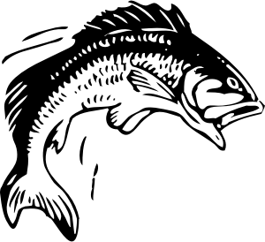

Many factors are in play when trying to land the big one, some are obvious while others require trial and error.
The weather changes every day, pay attention to the current conditions.
When at least half the sky is covered in clouds and accompanied by strong winds, it is indicative of an approaching cold front.
This is a great time to fish. The wave action caused by the winds oxygenates the water and provides extra food. This is when bass go on a feeding frenzy.
The next day is another story as the cold front hits. Bass are most comfortable when the water is between 18 and 24 C. As the water chills, their metabolism slows down and they get sluggish, this is when bass are less likely to strike.
A cold front usually passes within a day, but it can last for longer. Unfortunately those are the breaks.
The other problem you have to contend with after the front has passed, is that fish will have gorged themselves during the approaching front, they won't be as hungry to feed. You still have a chance to lure them into striking. Instincts other than hunger will cause them to strike: curiosity, or an instinctive attack reaction when surprised by the lure.
When bass are not feeding, they rest in deep water usually around underwater structure, this place is called the sanctuary. When in the sanctuary, bass are inactive and can seldom be tempted into biting or provoked into striking.
The bass will occasionally travel from the sanctuary to some other area nearby, usually into somewhat shallower water containing logs or aquatic plants. This is when they are in a highly active feeding state.
Work areas around plants, rocks or logs near the underwater structure, and you could land the bass when they come out to feed. Use your fish finder to find underwater structures.
Bass are extremely curious and many get hooked early in life. But they soon become wary of certain lure types or colors. A largemouth bass soon learns that lures, especially those it sees most often, can get it into trouble. As a bass gets bigger, it gets tougher to fool. On the other hand, when a bass meets a lure it does not recognize, curiosity can tempt a strike.
Switch lures when working an area, this increases your chance of attracting fish that have specific lure preferences.
Noisy activities are to be avoided because they frighten the bass. When frightened, the bass become uneasy and either quickly leave the area or cease feeding. Running aground or into other obstacles is a very noisy activity. Similarly, cruising at a fast speed with your outboard is also noisy. Slow down when nearing a fishing area and switch to your trolling motor for a quieter approach.
See navigating for more on using your trolling motor.